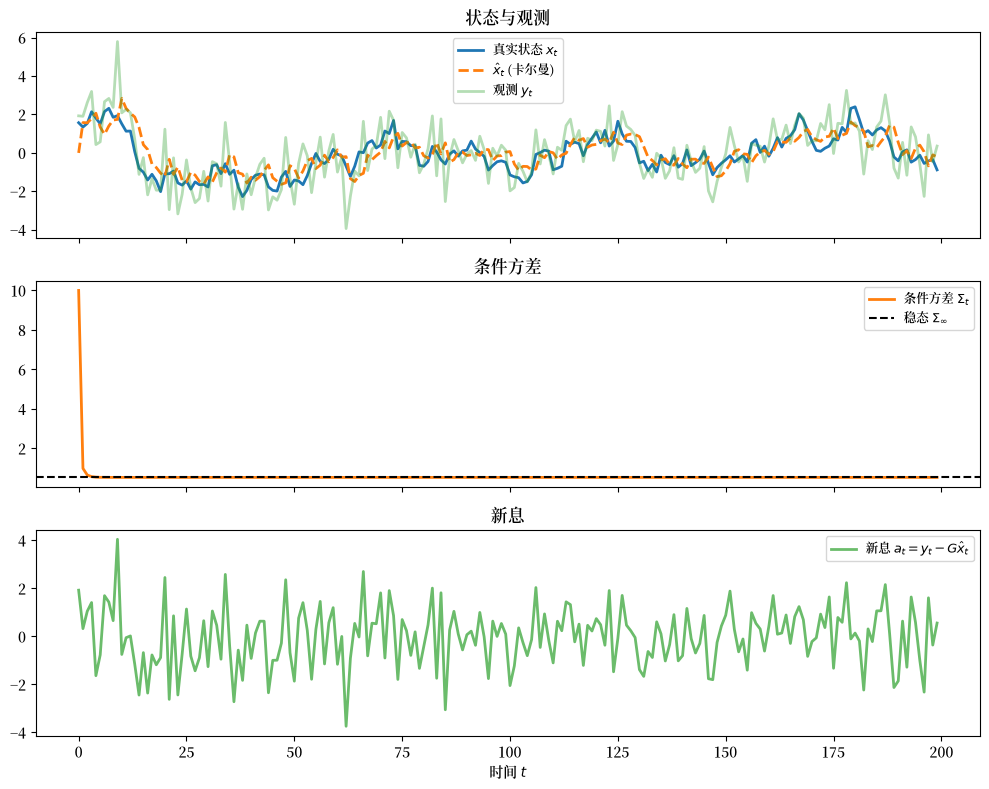
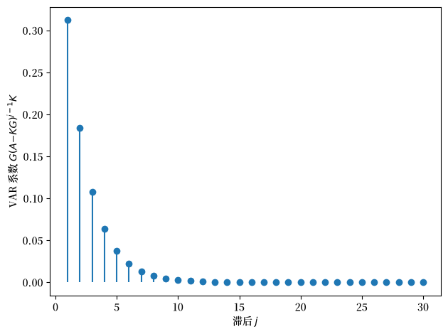
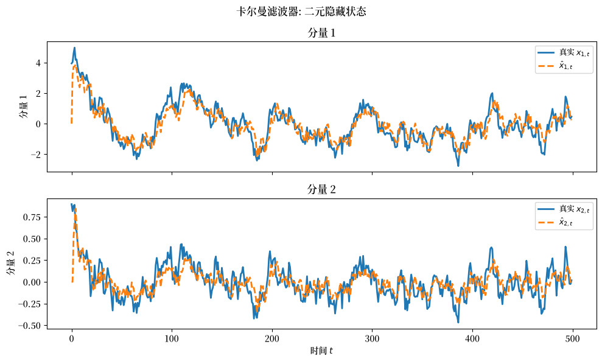
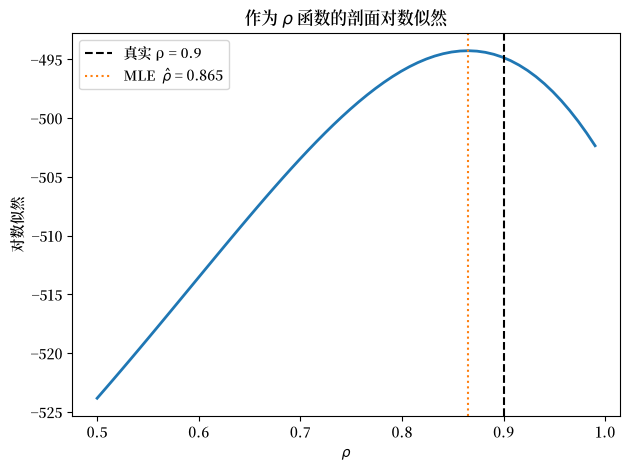

49. 卡尔曼滤波器与向量自回归#
除了 Anaconda 中已有的库之外，本讲座还需要以下库：
!pip install quantecon
49.1. 概述#
本讲座为线性高斯状态空间系统推导卡尔曼滤波器，然后用它来构建向量自回归（VAR）。
它建立在 初见卡尔曼滤波器 之上，在那里滤波器是通过滤波分布和预测分布引入的。
它补充了 卡尔曼滤波器进阶，在那里同样的递归被用于一个工人-企业学习问题中。
本讲座将注意力从对隐藏状态的滤波，转移到表示和估计由该隐藏状态所生成的可观测过程。
我们的方法依赖于反复应用总体线性最小二乘投影公式，其核心洞见是：计算一个联合正态随机向量的条件期望，等同于运行一个总体普通最小二乘法回归。
本讲座涵盖：
从第一性原理推导卡尔曼滤波器的递归
支配条件协方差矩阵的矩阵黎卡提差分方程
新息表示以及 Gram-Schmidt 白化性质
隐马尔可夫模型的结构
状态空间系统的似然函数及其在最大似然估计和贝叶斯估计中的作用
时不变卡尔曼滤波器如何生成一个向量自回归
为什么卡尔曼滤波器是解释由经济数据估计得到的 VAR 的一个基本工具
后续讲座 变量子集的向量自回归 将这套工具应用于一个在实践中经常出现的问题：当计量经济学家只能观测到 VAR 中部分变量时，会发生什么。
49.2. 状态空间系统#
卡尔曼滤波器适用于以下针对 \(t \geq 0\) 的状态空间系统：
其中
\(x_t\) 是一个 \(n \times 1\) 的状态向量（隐藏的、不可观测的）
\(y_t\) 是一个关于隐藏状态的 \(m \times 1\) 信号向量（可观测的）
\(w_{t+1}\) 是一个 \(p \times 1\) 的独立同分布的正态随机变量序列，均值为 \(0\)，协方差矩阵为单位矩阵
\(v_t\) 是一个独立同分布的正态随机变量序列，均值为零，协方差矩阵为 \(R\)
\(w_t\) 与 \(v_s\) 在所有日期对上都正交
系数矩阵具有以下维度： \(A\) 是 \(n \times n\)，\(C\) 是 \(n \times p\)，\(G\) 是 \(m \times n\)，\(R\) 是 \(m \times m\)。
初始状态满足
在时刻 \(t\)，我们观测到 \(y_t, \ldots, y_0\) 而不能观测到 \(x_t, \ldots, x_0\)， 并且我们知道由 (49.1) 和 (49.2) 所隐含的所有一阶矩和二阶矩。
49.3. 卡尔曼滤波器#
49.3.1. 起始分布#
从 \(t = 0\) 开始沿时间向前推进，在观测到 \(y_0\) 之前， 设定 (49.1)-(49.2) 意味着 \(y_0\) 的边缘分布为
对于 \(t \geq 0\)，令 \(y^t = [y_t, y_{t-1}, \ldots, y_0]\)。
我们想要一个便于表示的、关于 \(y_t\) 在给定历史 \(y^{t-1}\) 条件下的条件分布的递归表示。
卡尔曼滤波器通过为 \(\hat{x}_t\) 和 \(\Sigma_t\) 构造递归公式来实现这一点，使得在 \(y^{t-1}\) 条件下 \(y_t\) 的分布将 (49.3) 推广为
其中 \(t \geq 1\)，而在 \(y^{t-1}\) 条件下 \(x_t\) 的分布为 \(N(\hat{x}_t, \Sigma_t)\)。
对象 \(\hat{x}_t\) 和 \(\Sigma_t\) 刻画了总体回归
以及条件协方差矩阵
49.3.2. 推导#
在每个时刻，我们的方法是将我们所不知道的对我们所知道的进行回归。
备注
因为我们的假设意味着 \(\{x_t, y_t\}_{t=0}^\infty\) 是一个联合正态随机过程，所以线性最小二乘回归等于条件数学期望。
下面每一步都是对贝叶斯法则的应用。
在没有联合正态性、只假设所有均值和协方差存在的较弱假设下，同样的计算得到”广义条件期望”，只有当这些条件期望是线性的时候它们才与真正的条件期望一致。
我们在 \(t = 0\) 时刻已知 \(\hat{x}_0\) 和 \(\Sigma_0\)。
\(y_0\) 中相对于 \((\hat{x}_0, \Sigma_0)\) 关于 \(x_0\) 的新信息即为新息
令 \(L_0\) 为隐藏状态误差 \(x_0-\hat{x}_0\) 对信号意外 \(y_0-G\hat{x}_0\) 的总体回归系数。
条件均值 \(\mathbb{E}[x_0 \mid y_0] = \hat{x}_0 + L_0(y_0 - G\hat{x}_0)\) 满足总体回归公式
其中 \(\eta\) 是最小二乘残差。
\(\eta\) 与 \((y_0 - G\hat{x}_0)\) 的正交性通过正规方程确定了 \(L_0\)
计算矩矩阵并求解 \(L_0\) 得到
因此 \(L_0\) 更新对 \(x_0\) 的估计，而 \(K_0=A L_0\) 更新对 \(x_1\) 的预测。
为了预测 \(x_1\)，注意
应用 (49.5) 得到 \(\mathbb{E}[x_1 \mid y_0] = A\hat{x}_0 + AL_0(y_0 - G\hat{x}_0)\)， 我们将其写为
其中时刻 0 的卡尔曼增益为
利用 (49.10) 和 \(y_0 = G x_0 + v_0\) 来计算 \(\Sigma_1 \equiv \mathbb{E}[(x_1 - \hat{x}_1)(x_1 - \hat{x}_1)^\top \mid y_0]\) 得到
因此 \(f(x_1 \mid y_0) \sim N(\hat{x}_1, \Sigma_1)\)。
收集时刻 \(0\) 的方程：
系统 (49.12) 将一个均值-协方差对 \((\hat{x}_0, \Sigma_0)\) 映射为一个新的对 \((\hat{x}_1, \Sigma_1)\)，并带有辅助输出 \((a_0, K_0)\)。
认识到”我们在第 1 期开始时所处的情形与第 0 期开始时相同”激活了一个递归，即卡尔曼滤波器。
49.3.3. 卡尔曼滤波器的递归#
迭代系统 (49.12) 得到针对 \(t \geq 0\) 的卡尔曼滤波器：
这里 \(K_t\) 是时刻 \(t\) 的卡尔曼增益。
49.3.4. 矩阵黎卡提方程#
将 (49.13) 第二行中 \(K_t\) 的表达式代入第四行，得到一个等价的更新公式：
方程 (49.14) 是矩阵黎卡提差分方程。
它支配着条件协方差矩阵序列 \(\{\Sigma_t\}_{t=0}^\infty\)，而不涉及观测值 \(\{y_t\}\)。
49.4. Gram-Schmidt 过程#
随机向量
是 \(y_t\) 相对于 \(y^{t-1}\) 的新息，即 \(y_t\) 中无法由过去观测预测的部分。
注意 \(\mathbb{E} a_t a_t^\top = G\Sigma_t G^\top + R\)，即在卡尔曼增益公式 (49.13) 中其逆矩阵出现的那个矩阵。
利用 \(a_t = G(x_t - \hat{x}_t) + v_t\) 直接计算可以表明 \(\mathbb{E} a_t a_{t-1}^\top = 0\)，更一般地，\(\mathbb{E}[a_t \mid a_{t-1}, \ldots, a_0] = 0\)。
备注
一个从第一性原理出发的替代论证：令 \(H(y^t)\) 表示 \(y^t\) 的闭线性张成空间。
由于 \(a_{t+1} = y_{t+1} - \mathbb{E}[y_{t+1} \mid y^t]\) 是一个最小二乘误差，\(a_{t+1} \perp H(y^t)\)，特别地 \(a_{t+1} \perp a_t\)。
因此 \(\{a_t\}\) 是关于 \(\{y_t\}\) 的一个白噪声新息过程。
有时 (49.13) 被称为白化滤波器：它以信号过程 \(\{y_t\}\) 为输入，并产生白噪声新息过程 \(\{a_t\}\) 作为输出。
类似地定义 \(H(a^t)\)，则 \(H(a^t) = H(y^t)\)，且 \([a_t, \ldots, a_0]\) 是该共同空间的一个正交基。
卡尔曼滤波器不是通过一个大的回归来计算 \(\mathbb{E}[x_t \mid y_{t-1}, \ldots, y_0]\)，而是对基 \([a_{t-1}, \ldots, a_0]\) 的一系列相继正交分量执行一系列小回归，这是 Gram-Schmidt 过程的一个实例。
49.5. 隐马尔可夫模型#
系统 (49.1)-(49.2) 是一个隐马尔可夫模型的例子。
可观测过程 \(\{y_t\}_{t=0}^\infty\) 不是马尔可夫的，但隐藏过程 \(\{x_t\}_{t=0}^\infty\) 是马尔可夫的。
均值和协方差过程 \(\{(\hat{x}_t, \Sigma_t)\}\) 也是马尔可夫的，它们是在 \([y_{t-1}, \ldots, y_0]\) 条件下 \(x_t\) 分布的充分统计量。
49.6. 估计#
49.6.1. 新息表示#
从卡尔曼滤波器中产生的新息表示为
其中对于 \(t \geq 1\) 有 \(\hat{x}_t = \mathbb{E}[x_t \mid y^{t-1}]\)，且 \(\mathbb{E}[a_t a_t^\top \mid y^{t-1}] = G\Sigma_t G^\top + R \equiv \Omega_t\)。
对于 \(t \geq 1\)，\(\mathbb{E}[y_t \mid y^{t-1}] = G\hat{x}_t\)，且在给定 \(y^{t-1}\) 条件下 \(y_t\) 的条件分布为 \(N(G\hat{x}_t, \Omega_t)\)。
因此，从卡尔曼滤波器递归中产生的对象 \((G\hat{x}_t, \Omega_t)\) 完全刻画了这个条件分布。
49.6.2. 似然函数#
我们可以将样本 \((y_T, y_{T-1}, \ldots, y_0)\) 的似然分解为
\(m \times 1\) 向量 \(y_t\) 的对数条件密度为
同时使用 (49.17) 和 (49.13)，我们可以对任何构成矩阵 \(A, G, C, R\) 基础的参数向量 \(\theta\) 递归地计算似然 (49.16)。
此类计算是高效计算自由参数的最大似然估计策略的核心。
49.6.3. 贝叶斯推断#
似然函数在贝叶斯推断中也是核心。
其中 \(\theta\) 是参数向量，\(y_0^T\) 是数据，\(\tilde{p}(\theta)\) 是在看到 \(y_0^T\) 之前关于 \(\theta\) 的先验密度，贝叶斯法则给出后验
分母是边缘联合密度 \(f(y_0^T)\)。
49.7. 向量自回归与卡尔曼滤波器#
49.7.1. 收敛到稳态#
在 Anderson et al. [1996] 所讨论的条件下，对黎卡提方程 (49.14) 的迭代从任何正半定初始值 \(\Sigma_0\) 出发都收敛到一个时不变矩阵 \(\Sigma\)。
(49.14) 的一个时不变不动点 \(\Sigma_t = \Sigma\) 是 \(x_t\) 围绕
的协方差矩阵，其中条件作用扩展到半无限的过去 \(s \leq t-1\)。
49.7.2. 一个时不变 VAR#
如果不动点 \(\Sigma\) 存在，且我们在 \(\Sigma_0 = \Sigma\) 处初始化滤波器，则新息表示 (49.15) 变为时不变：
其中 \(\mathbb{E} a_t a_t^\top = G\Sigma G^\top + R\)，且稳态卡尔曼增益为 \(K = A\Sigma G^\top(G\Sigma G^\top + R)^{-1}\)。
从 (49.18) 我们得到 \(\hat{x}_{t+1} = (A - KG)\hat{x}_t + K y_t\)。
如果 \(A - KG\) 的特征值的模严格有界地低于 1，我们可以向前求解此方程得到
将 (49.19) 代入 (49.18) 的观测方程，得到向量自回归
由构造可知
正交条件 (49.21) 将 (49.20) 识别为一个向量自回归。
设 \(L\) 表示滞后算子，使得 \(L x_t = x_{t-1}\)，由 (49.18) 推导出的移动平均表示为
49.7.3. 解释 VAR#
经济模型的均衡（或它们的线性或对数线性近似）通常采用状态空间系统 (49.1) 的形式。
这个隐马尔可夫模型通过 \(p \times 1\) 冲击向量 \(w_{t+1}\) 扰动状态 \(x_t\)，并通过 \(m \times 1\) 测量误差 \(v_t\) 扰动可观测量的 \(m \times 1\) 向量 \(y_t\)。
一个经济理论通常使得 \(w_{t+1}\) 和 \(v_t\) 可以直接被解释为对偏好、技术、禀赋或信息集的冲击。
状态空间系统 (49.1) 用这些可解释的冲击来表示 \(\{y_t\}\)。
然而，在通常情形下，即使 \(A, G, C, R\) 已知，这些冲击也不能直接从 \(y_t\) 中恢复出来。
新息表示 (49.18) 用 \(m \times 1\) 新息向量 \(a_t\) 来表示同一个随机过程 \(\{y_t\}\)，这些新息可以通过运行无限阶总体向量自回归来恢复。
它在将原始表示 (49.1) 映射到 VAR (49.20) 中的作用，使得卡尔曼滤波器成为解释向量自回归不可或缺的工具。
49.8. 谱分解恒等式#
因为原始状态空间系统 (49.1) 和新息表示 (49.18) 描述的是同一个随机过程 \(\{y_t\}\)，它们对 \(\{y_t\}\) 的谱密度矩阵给出了两个不同的公式。
令这两个公式相等就得到谱分解恒等式。
49.8.1. 谱密度的两种表示#
首先考虑原始状态空间系统。
将 (49.1) 的第一行写为 \(x_t = (zI - A)^{-1} C w_{t+1}\)（使用 \(z\) 变换约定 \(z^{-1} x_t = x_{t-1}\)），\(\{x_t\}\) 的协方差生成函数为
由于 \(v_t\) 与 \(x_t\) 正交，\(\{y_t\}\) 的谱密度为
现在考虑新息表示。
时不变新息表示 (49.18) 给出 \(y_t = [G(zI - A)^{-1}K + I]\, a_t\)。
由于 \(a_t\) 是协方差矩阵为 \(G\Sigma G^\top + R\) 的白噪声，谱密度也为
49.8.2. 谱分解恒等式#
令 (49.22) 和 (49.23) 相等，得到谱分解恒等式：
左侧用结构性冲击 \((w_{t+1}, v_t)\) 和矩阵 \((A, C, G, R)\) 表示 \(S_y(z)\)。
右侧将同一对象表示为由新息 \(a_t\) 和稳态卡尔曼增益 \(K\) 构建的谱因子。
49.8.3. Wold 表示和自回归表示#
从新息表示 (49.18) 出发，我们既可以得到 Wold 移动平均表示，也可以得到自回归表示。
对于 Wold 表示，迭代 (49.18) 中的状态方程，用当前和过去的新息表示当前观测。
用 \(L\) 表示滞后算子，(49.18) 意味着
这是用 \(\{y_t\}\) 的一步预测误差表示的 Wold 移动平均表示。
对于自回归表示，将 (49.25) 中的移动平均算子求逆，并用当前和过去的观测来求解 \(a_t\)。
利用恒等式
得到
这就是已在 (49.20) 中陈述的向量自回归。
关键的分析事实是：在温和的稳定性条件下，\(\det[G(zI-A)^{-1}K + I]\) 的零点全部位于单位圆内部。
这确保了 (49.25) 中的移动平均算子有一个因果的单边逆。
因此 \(a_t\) 位于当前和过去观测 \(y^t\) 的闭线性张成空间中，所以 \(a_t\) 是 VAR 中的总体预测误差。
49.9. Python 实现#
我们现在使用 quantecon 库来说明该理论，它提供了 LinearStateSpace 和 Kalman 类，实现了上面推导的所有内容。
我们使用以下导入：
import numpy as np
import matplotlib.pyplot as plt
import quantecon as qe
import matplotlib as mpl # i18n
FONTPATH = "fonts/SourceHanSerifSC-SemiBold.otf" # i18n
mpl.font_manager.fontManager.addfont(FONTPATH) # i18n
mpl.rcParams['font.family'] = ['Source Han Serif SC'] # i18n
49.9.1. 一个标量隐藏 AR(1) 模型#
考虑一个带有测量噪声观测的标量隐藏 AR(1) 状态：
其中 \(w_t, v_t \sim N(0, 1)\) 独立同分布。
这里 \(\rho\) 是持续性参数，而 \(\sigma_w\) 和 \(\sigma_v\) 是冲击标准差。
LinearStateSpace 类通过矩阵 \(H\) 来参数化测量噪声，使得 \(R = HH^\top\)。
# 模型参数
ρ = 0.9
σ_w = 0.5
σ_v = 1.0
# 状态空间矩阵
A = np.array([[ρ]])
C = np.array([[σ_w]])
G = np.array([[1.0]])
R = np.array([[σ_v**2]])
# 构建一个 LinearStateSpace 和一个 Kalman 滤波器对象
H = np.array([[σ_v]]) # 测量噪声因子: R = H @ H.T
lss = qe.LinearStateSpace(
A, C, G, H, mu_0=np.zeros(1), Sigma_0=np.eye(1) * 10.0)
kf = qe.Kalman(lss)
kf.set_state(np.zeros(1), np.eye(1) * 10.0) # 弥散先验
我们首先模拟一条真实隐藏状态和带噪声观测的样本路径。
T = 200
x_path, y_path = lss.simulate(ts_length=T, random_state=42)
# 形状: x_path 是 (n, T), y_path 是 (m, T)
x_true = x_path[0, :]
y_obs = y_path[0, :]
然后我们手动逐步运行卡尔曼滤波器。
Kalman.update 方法执行一个完整周期，将先验转移到滤波分布，然后再转移到下一期的先验。
因此，(49.13) 中定义的 \((\hat{x}_t, \Sigma_t)\) 是在调用 update 之前 该对象所持有的值，我们在那时记录它们。
x_hats = np.zeros(T)
Sigmas = np.zeros(T)
innovations = np.zeros(T)
for t in range(T):
x_hats[t] = kf.x_hat.item() # x_hat_t = E[x_t | y^{t-1}]
Sigmas[t] = kf.Sigma.item() # Sigma_t
innovations[t] = y_obs[t] - (G @ kf.x_hat).item()
kf.update(y_obs[t:t+1]) # 一个完整的滤波周期
正确排列这个顺序很重要。
如果在调用之后再记录 kf.x_hat，将会存储一步向前预测 \(\hat{x}_{t+1}\)，而将其与 \(y_t\) 相减得到的序列将不是新息，也不会具有方差 \(G\Sigma G^\top + R\)。
fig, axes = plt.subplots(3, 1, figsize=(10, 8), sharex=True)
t_range = np.arange(T)
axes[0].plot(t_range, x_true, lw=2,
label='真实状态 $x_t$')
axes[0].plot(t_range, x_hats, lw=2,
linestyle='--', label=r'$\hat{x}_t$ (卡尔曼)')
axes[0].plot(t_range, y_obs, alpha=0.35, lw=2, label='观测 $y_t$')
axes[0].set_title('状态与观测')
axes[0].legend(fontsize=9)
axes[1].plot(t_range, Sigmas, color='C1', lw=2,
label=r'条件方差 $\Sigma_t$')
axes[1].axhline(kf.Sigma_infinity[0, 0], ls='--', color='k',
label=r'稳态 $\Sigma_\infty$')
axes[1].set_title('条件方差')
axes[1].legend(fontsize=9)
axes[2].plot(t_range, innovations, color='C2', lw=2, alpha=0.7,
label=r'新息 $a_t = y_t - G\hat{x}_t$')
axes[2].set_title('新息')
axes[2].set_xlabel('时间 $t$')
axes[2].legend(fontsize=9)
fig.tight_layout()
plt.show()
findfont: Failed to find font weight normal, now using 600.
findfont: Failed to find font weight normal, now using 600.
findfont: Failed to find font weight normal, now using 600.
findfont: Failed to find font weight normal, now using 600.
findfont: Failed to find font weight normal, now using 600.

图 49.1 标量卡尔曼滤波#
经过短暂的调整后，卡尔曼估计比原始的带噪声观测更紧密地跟随隐藏状态。
条件方差从弥散先验迅速下降，然后稳定到其稳态值。
新息序列围绕零波动，正如一步预测误差所应有的那样。
它的样本标准差应接近于 \(\sqrt{G\Sigma_\infty G^\top + R}\)。
print(f"sample sd of innovations = {innovations.std():.4f}")
print(f"steady-state sd = "
f"{np.sqrt(kf.Sigma_infinity[0, 0] + R[0, 0]):.4f}")
print(f"first-order autocorrelation = "
f"{np.corrcoef(innovations[1:], innovations[:-1])[0, 1]:.4f}")
sample sd of innovations = 1.2297
steady-state sd = 1.2373
first-order autocorrelation = -0.0455
自相关接近于零，证实了滤波器已经将观测序列白化。
49.9.2. 黎卡提方程的收敛#
Kalman 类通过直接求解离散代数黎卡提方程来计算稳态协方差 \(\Sigma_\infty\)。
Sigma_inf, K_inf = kf.stationary_values()
print(f"Steady-state covariance Σ_inf = {Sigma_inf[0, 0]:.6f}")
print(f"Kalman filter converged to Σ_t = {Sigmas[-1]:.6f}")
print(f"Steady-state Kalman gain K = {K_inf[0, 0]:.6f}")
A_minus_KG = A - K_inf @ G
eigval = np.linalg.eigvals(A_minus_KG)[0]
print(f"\nEigenvalue of (A - KG) = {eigval:.6f}")
print(f"Stable VAR: {np.abs(eigval) < 1}")
Steady-state covariance Σ_inf = 0.530899
Kalman filter converged to Σ_t = 0.530899
Steady-state Kalman gain K = 0.312110
Eigenvalue of (A - KG) = 0.587890
Stable VAR: True
49.9.3. VAR 表示#
利用 (49.20)，无限阶 VAR 表示中的系数为 \(G(A - KG)^j K\)，其中 \(j = 0, 1, 2, \ldots\)
我们通过 stationary_coefficients 来获取它们：
J = 30
var_coeffs = kf.stationary_coefficients(J, coeff_type='var')
# 滞后 j+1 的系数矩阵
lags = np.arange(1, J + 1)
coeff_values = np.array([var_coeffs[j][0, 0] for j in range(J)])
fig, ax = plt.subplots()
ax.stem(lags, coeff_values, basefmt=' ')
ax.set_xlabel('滞后 $j$')
ax.set_ylabel(r'VAR 系数 $G(A{-}KG)^{j-1}K$')
fig.tight_layout()
plt.show()

图 49.2 来自新息表示的 VAR 系数#
大部分自回归权重集中在前几个滞后上。
后面的系数几乎为零，因此在这个例子中，一个短的有限滞后 VAR 就捕获了无限阶表示的大部分。
49.9.4. 似然评估#
我们使用 (49.17) 来计算模拟样本的对数似然。
def log_likelihood(A, C, G, R, y_data, x_hat_0, Sigma_0):
"""使用卡尔曼滤波器递归计算对数似然。"""
H_ = np.linalg.cholesky(R) # R = H_ @ H_.T
lss_ = qe.LinearStateSpace(A, C, G, H_, mu_0=x_hat_0, Sigma_0=Sigma_0)
kf_ = qe.Kalman(lss_)
kf_.set_state(x_hat_0, Sigma_0)
T_, m_ = y_data.shape
loglik = 0.0
for t in range(T_):
x_h = kf_.x_hat
Sig = kf_.Sigma
Omega = G @ Sig @ G.T + R # 新息协方差
a_t = y_data[t] - (G @ x_h).flatten()
sign, logdet = np.linalg.slogdet(Omega)
loglik += -0.5 * (m_ * np.log(2 * np.pi) + logdet
+ float(a_t @ np.linalg.solve(Omega, a_t)))
kf_.update(y_data[t])
return loglik
y_data_col = y_obs.reshape(-1, 1)
ll = log_likelihood(A, C, G, R,
y_data_col,
np.zeros(1), np.eye(1) * 10.0)
print(f"Log-likelihood of sample: {ll:.4f}")
Log-likelihood of sample: -325.2335
49.10. 由此引出的方向#
卡尔曼滤波器将一个状态空间系统映射为总体上对 \(y_t\) 关于其自身过去值进行回归所能恢复出的 VAR。
当状态 \(x_t\) 包含计量经济学家看不到的变量时，这一映射就变得最为有趣。
后续内容 变量子集的向量自回归 讨论了这方面的一个典型情形：\(Y_t\) 遵循一个有限阶 VAR，而计量经济学家只能观测到其子向量 \(y_t = S_y Y_t\)。
在那里，我们构建了通用代码，给定 \(Y_t\) 的 VAR 以及选择矩阵 \(S_y\)，返回 \(y_t\) 的 VAR 表示和移动平均表示，并将小系统中的新息表达为大系统中新息的分布滞后形式。
49.11. 总结#
卡尔曼滤波器通过将先验预测与当前观测中包含的新信息相结合，递归地更新关于隐藏状态的信念。
黎卡提方程跟踪滤波器的条件协方差如何演化，其稳态使滤波器成为时不变的。
在该稳态处，新息表示用由构造而成的白噪声一步预测误差来表示可观测过程。
向后求解新息表示得到一个无限阶 VAR，而向前求解则得到 Wold 移动平均表示。
计量经济学家观测哪些变量，决定了卡尔曼增益，进而决定了 VAR 表示和 Wold 表示，即使底层状态动态保持不变也是如此。
变量子集的向量自回归 对这一观察进行了系统的探讨。
49.12. 练习#
练习 49.1
考虑上面使用的标量 AR(1) 状态空间系统，其中 \(\rho = 0.9\)， \(\sigma_w = 0.5\)，\(\sigma_v = 1.0\)。
通过在其不动点 \(\Sigma_{t+1} = \Sigma_t = \Sigma\) 处求解标量黎卡提方程 (49.14)，为稳态条件方差 \(\Sigma_\infty\) 推导一个代数表达式。
证明 \(\Sigma\) 满足一个二次方程，求出其正根，并数值验证你的公式与 kf.Sigma_infinity 相符。
解答 练习 49.1
这是一个解答：
在 (49.14) 的标量版本中设 \(\Sigma_{t+1} = \Sigma_t = \Sigma\)，其中 \(A = \rho\)，\(CC^\top = \sigma_w^2\)，\(GG^\top = 1\)， \(R = \sigma_v^2\)：
两边同乘 \(\Sigma + \sigma_v^2\) 并重新整理：
取此二次方程的正根：
ρ_, σ_w_, σ_v_ = 0.9, 0.5, 1.0
b = σ_v_**2 * (1 - ρ_**2) - σ_w_**2
discriminant = b**2 + 4 * σ_v_**2 * σ_w_**2
Sigma_formula = (-b + np.sqrt(discriminant)) / 2
A_ = np.array([[ρ_]])
C_ = np.array([[σ_w_]])
G_ = np.array([[1.0]])
R_ = np.array([[σ_v_**2]])
H_ = np.array([[σ_v_]]) # R_ = H_ @ H_.T
lss_ = qe.LinearStateSpace(A_, C_, G_, H_, mu_0=np.zeros(1), Sigma_0=np.eye(1))
kf_ = qe.Kalman(lss_)
print(f"Analytical Σ_inf = {Sigma_formula:.8f}")
print(f"Numerical Σ_inf = {kf_.Sigma_infinity[0, 0]:.8f}")
Analytical Σ_inf = 0.53089919
Numerical Σ_inf = 0.53089919
练习 49.2
本练习考虑一个二维状态和一维观测：
从弥散先验出发，从这个系统模拟 \(T = 500\) 个观测。
运行卡尔曼滤波器，并绘制 \(\hat{x}_t\) 的两个分量与真实隐藏状态路径的对比。
计算并报告稳态协方差 \(\Sigma_\infty\) 和卡尔曼增益 \(K_\infty\)。
检查 \(A - K_\infty G\) 的特征值是否严格位于单位圆内，从而确认 VAR 表示 (49.20) 是稳定的。
解答 练习 49.2
这是一个解答：
A2 = np.array([[0.9, 0.1],
[0.0, 0.8]])
C2 = np.array([[0.4],
[0.1]])
G2 = np.array([[1.0, 0.0]])
R2 = np.array([[0.5]])
H2 = np.array([[np.sqrt(0.5)]]) # R2 = H2 @ H2.T
lss2 = qe.LinearStateSpace(A2, C2, G2, H2,
mu_0=np.zeros(2),
Sigma_0=np.eye(2) * 5.0)
kf2 = qe.Kalman(lss2)
kf2.set_state(np.zeros(2), np.eye(2) * 5.0)
T2 = 500
x2_path, y2_path = lss2.simulate(ts_length=T2, random_state=0)
x_hats2 = np.zeros((T2, 2))
for t in range(T2):
x_hats2[t] = kf2.x_hat.ravel() # 在更新之前记录 x_hat_t
kf2.update(y2_path[:, t])
fig, axes = plt.subplots(2, 1, figsize=(10, 6), sharex=True)
for i, ax in enumerate(axes):
ax.plot(x2_path[i, :], lw=2, label=f'真实 $x_{{{i+1},t}}$')
ax.plot(x_hats2[:, i], lw=2, ls='--', label=rf'$\hat{{x}}_{{{i+1},t}}$')
ax.set_title(f'分量 {i+1}')
ax.legend(fontsize=9)
ax.set_ylabel(f'分量 {i+1}')
axes[1].set_xlabel('时间 $t$')
fig.suptitle('卡尔曼滤波器: 二元隐藏状态')
fig.tight_layout()
plt.show()
# 稳态值
Sigma2_inf, K2_inf = kf2.stationary_values()
print("Steady-state covariance Σ_inf:")
print(np.round(Sigma2_inf, 5))
print("\nSteady-state Kalman gain K_inf:")
print(np.round(K2_inf, 5))
# A - K_inf G 的特征值
AKG2 = A2 - K2_inf @ G2
eigvals2 = np.linalg.eigvals(AKG2)
print(f"\nEigenvalues of A - K_inf G: {np.round(eigvals2, 5)}")
print(f"Stable VAR: {np.all(np.abs(eigvals2) < 1)}")

Steady-state covariance Σ_inf:
[[0.32854 0.07219]
[0.07219 0.0166 ]]
Steady-state Kalman gain K_inf:
[[0.36559]
[0.06971]]
Eigenvalues of A - K_inf G: [0.56394 0.77047]
Stable VAR: True
在弥散先验的暂态之后，两个卡尔曼估计都紧密地跟随其对应的隐藏状态路径。
第二个分量没有被直接观测，因此它的跟踪来自于状态动态及其与观测信号的联系。
打印出的特征值随后检查了 VAR 表示的独立稳定性条件。
练习 49.3
本练习使用正文中的标量模型研究似然和参数估计，真实参数为 \((\rho, \sigma_w, \sigma_v) = (0.9, 0.5, 1.0)\)：
模拟 \(T = 300\) 个观测。
编写一个函数，将对数似然作为 \(\rho \in (0, 1)\) 的函数进行计算，保持 \(\sigma_w = 0.5\) 和 \(\sigma_v = 1.0\) 固定，并针对一组网格值绘制对数似然关于 \(\rho\) 的图。
数值定位最大值，并检查它是否接近真实值 \(\rho = 0.9\)。
解答 练习 49.3
这是一个解答：
# 真实参数
ρ_true, sw_true, sv_true = 0.9, 0.5, 1.0
A_t = np.array([[ρ_true]])
C_t = np.array([[sw_true]])
G_t = np.array([[1.0]])
R_t = np.array([[sv_true**2]])
H_t = np.array([[sv_true]]) # R_t = H_t @ H_t.T
lss_t = qe.LinearStateSpace(A_t, C_t, G_t, H_t,
mu_0=np.zeros(1), Sigma_0=np.eye(1))
_, y_sim = lss_t.simulate(ts_length=300, random_state=7)
y_sim = y_sim.T # 形状 (300, 1)
def ll_rho(ρ_val):
A_ = np.array([[ρ_val]])
C_ = np.array([[sw_true]])
G_ = np.array([[1.0]])
R_ = np.array([[sv_true**2]])
return log_likelihood(A_, C_, G_, R_, y_sim,
np.zeros(1), np.eye(1) * 10.0)
ρ_grid = np.linspace(0.5, 0.99, 60)
ll_vals = np.array([ll_rho(r) for r in ρ_grid])
ρ_mle = ρ_grid[np.argmax(ll_vals)]
fig, ax = plt.subplots()
ax.plot(ρ_grid, ll_vals, lw=2)
ax.axvline(ρ_true, color='k', ls='--', label=f'真实 ρ = {ρ_true}')
ax.axvline(ρ_mle, color='C1', ls=':', label=f'MLE $\\hat{{\\rho}}$ = {ρ_mle:.3f}')
ax.set_xlabel(r'$\rho$')
ax.set_ylabel('对数似然')
ax.set_title('作为 $\\rho$ 函数的剖面对数似然')
ax.legend()
fig.tight_layout()
plt.show()
print(f"True ρ = {ρ_true}, MLE ρ_hat = {ρ_mle:.4f}")
findfont: Failed to find font weight normal, now using 600.

True ρ = 0.9, MLE ρ_hat = 0.8654
似然曲线是单峰的，其最大值接近真实值 \(\rho = 0.9\)。
网格最大化器与真实值之间的微小差距来自于有限样本的随机性和离散网格的使用。